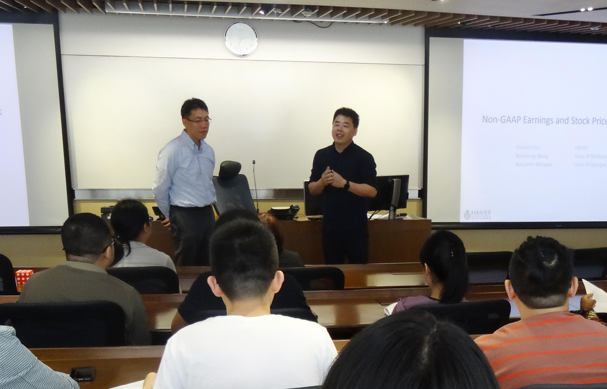
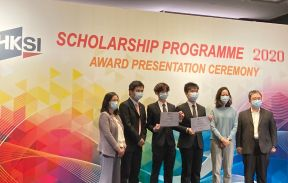

Research & Scholarly Activities
|  | Publication and Academic Workshops Please click the link to see the list of top-tier publications. Please click the link to see the list of seminars and brown bag workshops held in 2021-22. |
||||||
 |
Second Prize of Philosophy and Social Sciences Outstanding Achievement Award (Jiangsu Province) |
||||||
 |
Research insights: Media Coverage and IPO Pricing around the World Research published in the Journal of Financial and Quantitative Analysis by Professor Yangyang Chen  Hong Kong PhD Fellowship Scheme (2021/22 Exercise): Repeated Success  PhD Graduate Joining Top Business School in France: Mr Zhenjiang Gu  Pooling Ideas on Cloud: The 2021 CJAR Summer Research Workshop, 17-18 July 2021 |
Teaching and Learning Activities
 |
Professional Seminar: Boardroom Dynamics by Adjunct Professor, Mr PH Chik |
 |
Faculty Achievement: Teaching Development Grant 2020-21, Dr Rengong Alex Zhang |
 |
College of Business First Year Teaching Award Ms Suzie Kim (Graduate Teaching Assistant) [more] |
 |
Graduate Development Series (Summer 2021) |
 |
Three New Academic Staff Joined the AC Family in August 2021 (Dr Jin Kyung Choi, Dr Jing Wen and Dr Kelvin Yeung) |
Student-related Activities
|  | Hong Kong Securities and Investment Institute (HKSI) Scholarship Programme 2020 |
 |
Hong Kong Economic Policy Challenge 2020 on 6 February 2021 |
 |
Graduation Speech, 2021 Commencement (MScPACG Session) |
Alumni Activities
 |
MAIA Alumni Story Sharing by Ms Jiang Yang: Never Say Never – My PhD Application Journey |
| AC Undergraduate Alumni Networking 1. WeChat Group for AC Undergraduate Mainland Alumni
Please consult your peer in this group, or add group administrator's WeChat ID, 179178906, to get invited to this group. 2. Facebook for AC Undergraduate Alumni Network |
Other Activities
 |
Farewell Lunch of the Department of Accountancy on 23 June 2021 |